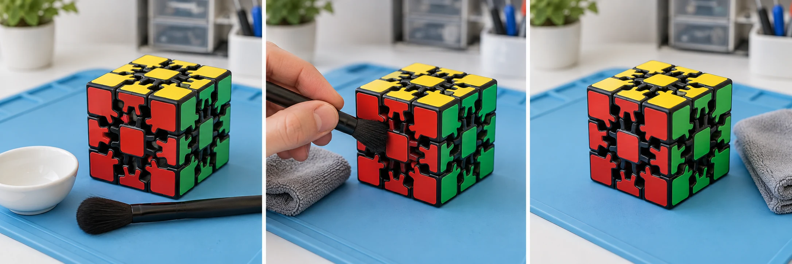

Retire la poussière sans perdre l’alignement des engrenages du Gear Cube. Privilégie un entretien doux et un démontage limité pour préserver les dents et la régularité des mouvements.
25 à 40 minutes 6 étapes Démontage selon le modèle
Avant le premier geste
Sur ton établi.
Un espace propre et bien éclairé. Les petites pièces vont dans la coupelle.
Sans notice de démontage adaptée à ton Gear Cube, garde les engrenages assemblés et nettoie les zones accessibles. Le temps indiqué est une estimation, hors séchage.

Avant le premier gesteIllustration générée · Vue extérieure
Étape 1 / 6
Le démontage
Préparer le Gear Cube
Photos de référence + notice du modèle
Le Gear Cube utilise un mécanisme à engrenages. Commence avec le puzzle résolu et ses pièces bien alignées.
Prends plusieurs photos sous différents angles. Elles serviront de repères si la notice autorise le retrait de certaines pièces.
Retire uniquement les pièces dont le démontage est décrit dans la notice. Range chaque élément avec ses repères et conserve les engrenages alignés.
Si aucune méthode n’est indiquée, garde le Gear Cube assemblé et passe directement au nettoyage des surfaces accessibles.
Le nettoyage extérieurIllustration générée · Vue extérieure
Étape 3 / 6
Le soin
Nettoyer les dents des engrenages
Brosse souple + chiffon microfibre
Essuie les surfaces avec un chiffon doux. Utilise une petite brosse souple ou un coton-tige pour enlever la poussière entre les dents accessibles.
Un chiffon à peine humide avec du savon doux peut servir sur le plastique uniquement si la notice le permet. N’envoie pas de liquide dans les engrenages.
Essuie les pièces, puis laisse-les sécher complètement avant le remontage. Garde le mécanisme et les parties métalliques au sec.
Les surfaces accessiblesIllustration générée · Vue extérieure
Étape 4 / 6
Le soin
Lubrifier seulement si nécessaire
Facultatif
Lubrifiant compatible avec le modèle
Lubrifie uniquement si le fabricant le recommande, avec un produit adapté aux puzzles mécaniques et compatible avec le plastique du modèle.
Sur les zones de contact propres et sèches prévues par la notice, applique une très petite quantité et respecte le dosage.
Après le remontageIllustration générée · Vue extérieure
Étape 5 / 6
La remise en route
Remonter sans désaligner les engrenages
Photos de référence + pièces repérées
Si tu as retiré des pièces, replace-les selon la notice en respectant leurs repères et l’alignement des engrenages.
Vérifie l’engagement des dents avec tes photos. Tourne doucement le mécanisme uniquement lorsque les pièces sont correctement maintenues.
Le contrôle finalIllustration générée · Vue extérieure
Étape 6 / 6
La remise en route
Vérifier la régularité des mouvements
Ton Gear Cube aligné
Fais tourner progressivement les différentes faces du Gear Cube dans les deux sens, sans accélérer.
Les engrenages doivent travailler régulièrement, sans blocage ni bruit anormal. Vérifie aussi qu’aucune poussière ne reste dans les dents accessibles.
Étape 1 sur 6
Illustrations générées pour CubeMaster : elles montrent un Gear Cube intact et son entretien extérieur, pas un démontage documenté. Pour les pièces internes et le remontage, suis la notice de ton modèle et tes propres photos.
Les bons réflexes
Questions fréquentes sur le nettoyage du Gear Cube.
Nettoyage, séchage et lubrification.
Peut-on nettoyer un Gear Cube sans le démonter ?
Oui, et c’est préférable si tu n’as pas la notice de démontage du modèle. Essuie les faces avec un chiffon microfibre et retire doucement la poussière accessible à la brosse, sans tirer sur les engrenages.
Comment enlever la poussière entre les dents ?
Utilise une petite brosse souple ou un coton-tige sec, sans appuyer sur les dents. Travaille uniquement dans les zones accessibles. Évite les objets pointus, les outils métalliques et les gestes qui pourraient déplacer ou déformer un engrenage.
Peut-on laver le Gear Cube à l’eau ?
Ne plonge pas le puzzle assemblé dans l’eau et ne verse pas de liquide dans les engrenages. Un chiffon à peine humide peut nettoyer le plastique si la notice le permet. Les pièces doivent sécher complètement, et le mécanisme métallique reste au sec.
Faut-il lubrifier les engrenages du Gear Cube ?
Seulement si le fabricant le recommande. Utilise un produit compatible avec le modèle, en très petite quantité aux endroits indiqués. Un excès retient la poussière ; les huiles domestiques et le WD-40 ne conviennent pas à cet entretien.
Que faire si les engrenages bloquent après le nettoyage ?
Arrête immédiatement la rotation. Vérifie les résidus visibles et, si tu as démonté des pièces, leur alignement avec tes photos et la notice. Ne force pas et ne cherche pas à régler le problème en ajoutant du lubrifiant.